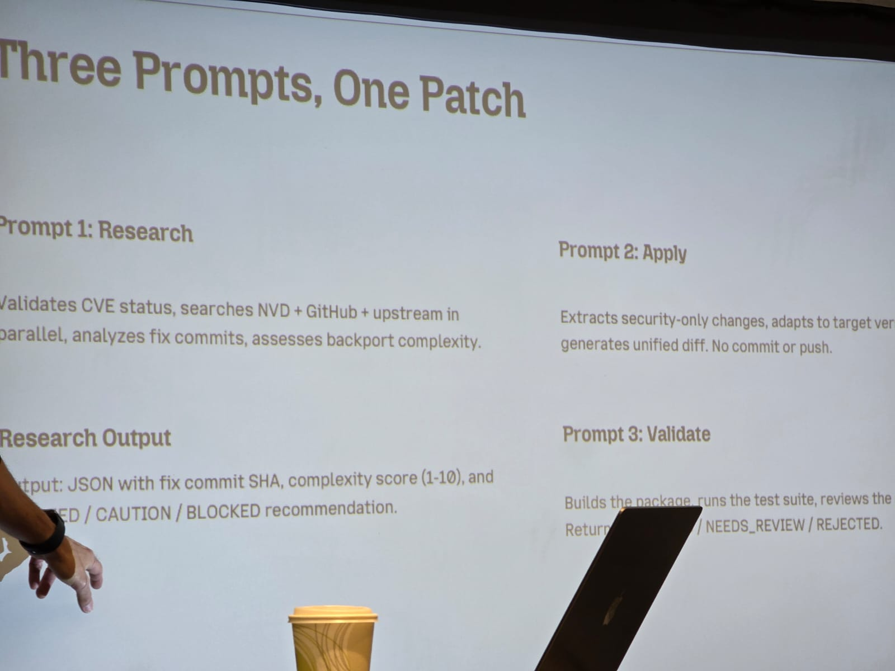
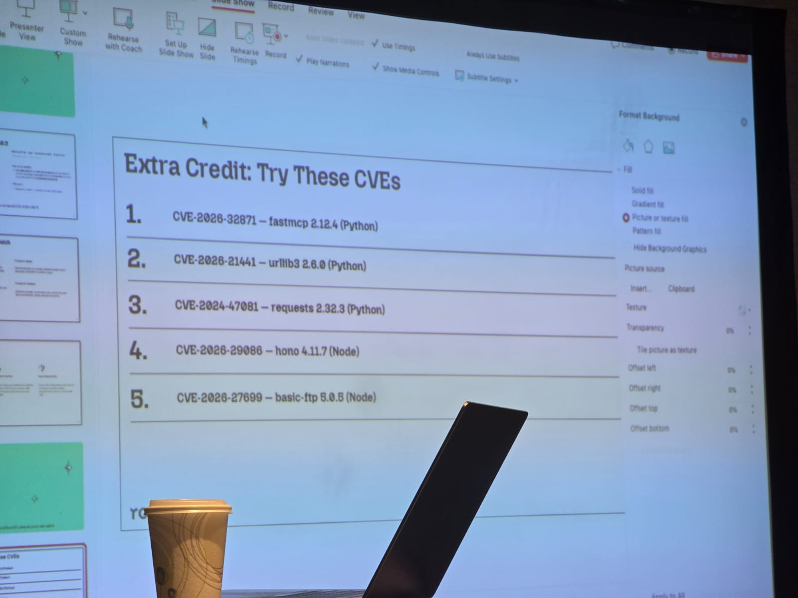

At BASC 2026, our team attended one of the most hands-on sessions of the conference: Vibe Coding a Backport, led by John Amaral from Root IO Labs. Over two hours, attendees went from reading a CVE description to producing a working backported patch for a real-world vulnerability, all on live systems.
What is Backporting?
When a vulnerability is discovered in a piece of software, the upstream maintainers release a fix, usually for the latest version. But in the real world, most production systems are running older versions. They can't just upgrade to the latest release without risking breaking API compatibility, failing tests, or introducing regressions.
Backporting is the practice of taking an upstream fix and carefully adapting it to work on an older codebase. It's one of the most critical, and underappreciated, skills in practical security engineering. Every major Linux distribution (Red Hat, Debian, Ubuntu) relies heavily on backported patches to keep legacy software secure without disrupting stability.
The Vulnerability: CVE-2024-37370
The workshop used CVE-2024-37370 in MIT Kerberos (krb5) as its case study, a real vulnerability that affects authentication infrastructure used across enterprise environments and many CNCF projects.
The session walked through what makes a bug "CVE-worthy":
- Impact on confidentiality, integrity, or availability
- Attack vector and exploitability (network-reachable vs. local)
- Affected versions and distribution in the wild
- CVSS scoring methodology
By studying the affected code and the upstream fix side-by-side, attendees could see exactly what changed and, more importantly, why the change was necessary.
Workshop Structure
The session was broken into several hands-on phases:
Vibe Coding: More Than a Buzzword
The session title references "vibe coding", the idea of using AI-assisted tools to accelerate development. John used this framing deliberately: AI tools are increasingly capable of generating patches, but understanding whether a patch is correct still requires deep human judgment.
The workshop demonstrated both sides: using AI to speed up initial diff analysis and patch drafting, then critically reviewing the output to catch semantic errors that passed a syntax check. The takeaway was clear, vibe coding is a force multiplier, not a replacement for understanding the vulnerability.
"A patch that fixes the CVE but breaks authentication for 10% of users isn't a fix, it's a different incident."
Hands-On: Debugging Failed Patches
One of the most valuable parts of the session was intentionally broken patches. Attendees were given patches that almost worked and had to debug:
- Patches that applied cleanly but left the vulnerability partially exploitable
- Patches that introduced a null pointer dereference in a new code path
- Patches correct for the target version but broken on a closely related branch
This hands-on debugging experience built the kind of intuition that documentation alone can't provide.

Tracing Risk Across Legacy Branches
Real environments don't run one version, they run a fleet. The session covered techniques for tracing whether a given patch is needed across multiple legacy branches simultaneously:
- Using
git log --all -S "<pattern>"to find where vulnerable code exists across branches - Comparing symbol tables to detect function-level differences between versions
- Using
diffoscopeand binary analysis to verify a patch actually changed compiled output - Checking distribution vendor patches (e.g., RHSA, DSA advisories) to learn from what others already backported
Key Takeaways

Try It Yourself
The entire workshop is open source and self-guided. John released the full lab materials, including the broken patches and guided exercises, on GitHub:
The repo includes setup instructions, the CVE-2024-37370 case study, intentionally broken patches to debug, and guidance for exploring additional legacy branches. Whether you're new to patch analysis or a seasoned maintainer, it's worth working through.
Backporting isn't glamorous, but it's how production systems actually get protected. Every distribution maintainer, every SRE with a legacy fleet, and every security engineer who has to say "we can't upgrade" needs this skill.